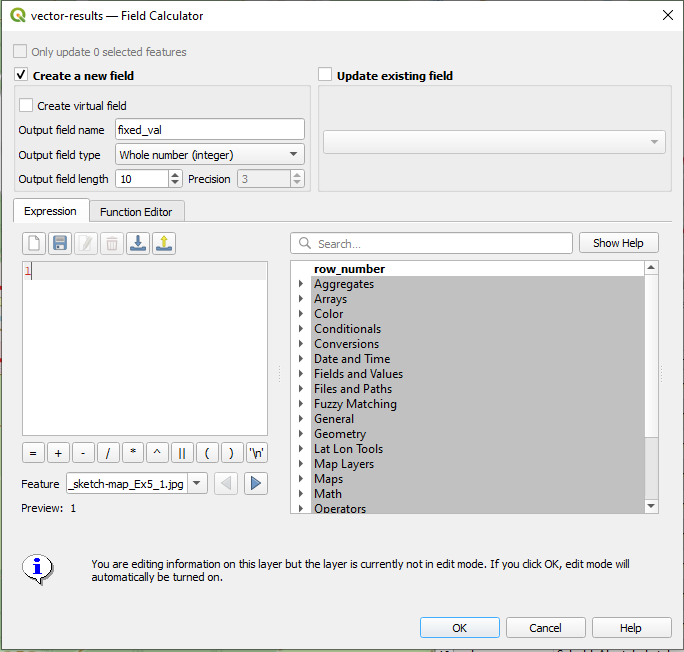
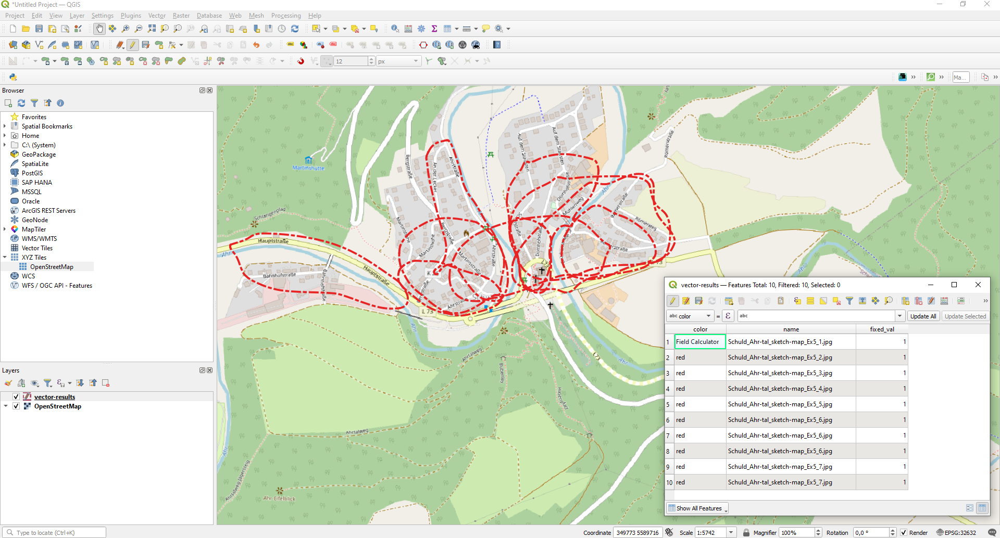
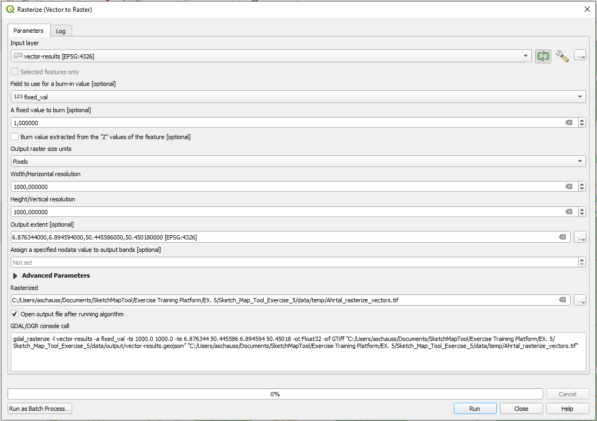
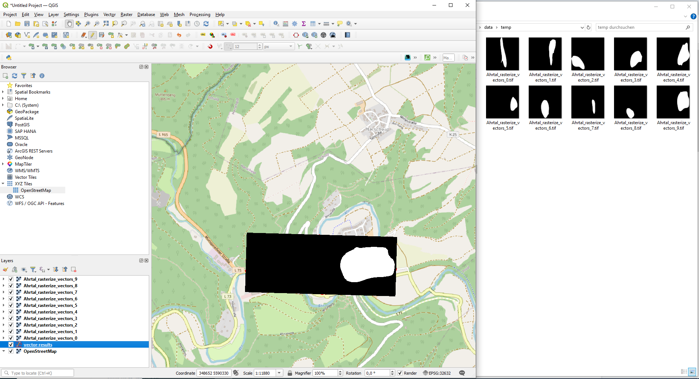
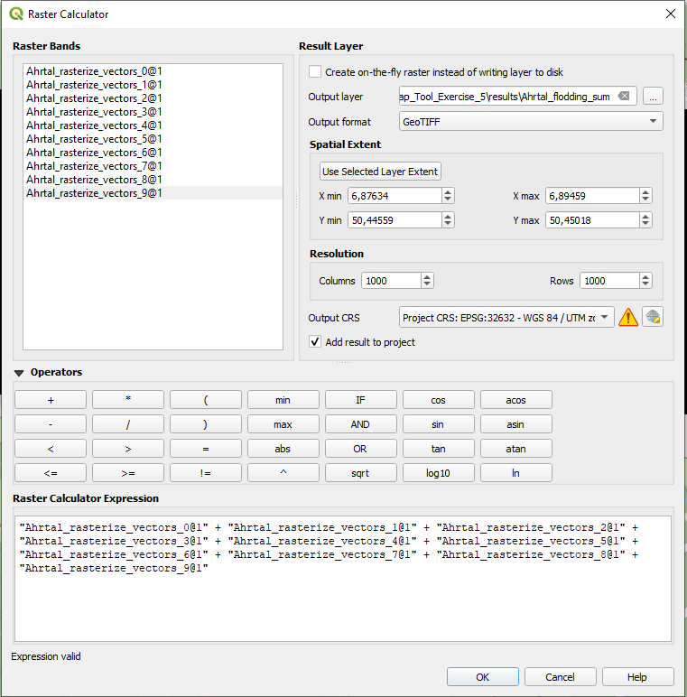
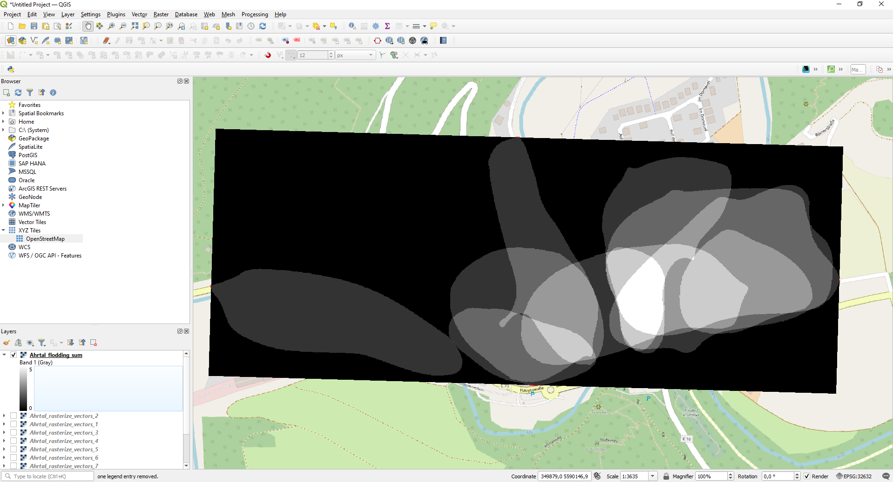
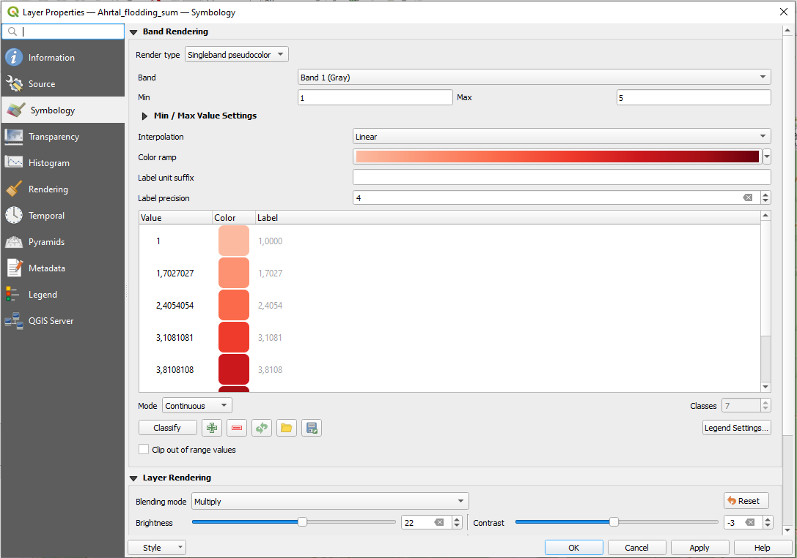
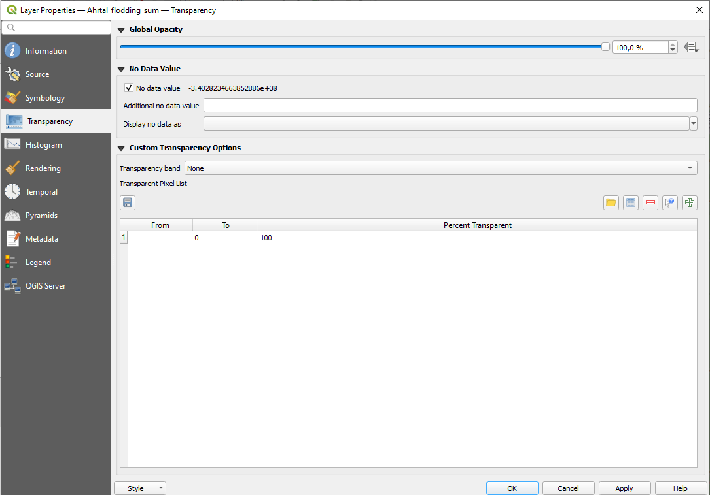
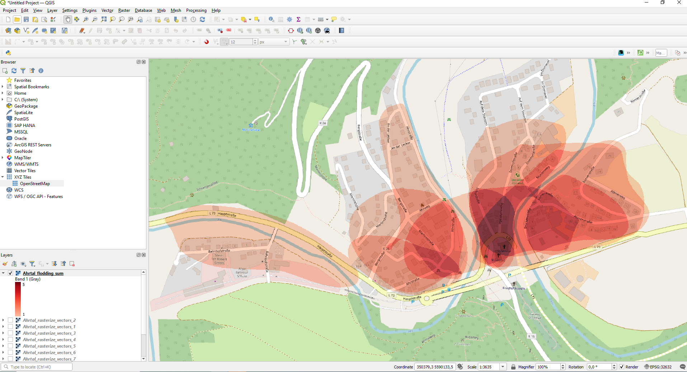

Sketch Map Tool Exercise 5 - Heat Map Visualization#
Characteristics of the exercise#
Aim of this exercise:
Learn how to analyze your Sketch Map Tool Outputs by creating a heatmap.
Type of trainings exercise:
This exercise can be used in online and presence training and is focused on an hands-on experience with QGIS spatial analysis tools.
Focus group (GIS-Knowlege Level)
Medium-Advanced level (participants have worked with QGIS before)
Phase of participatory /community mapping
Analysing participatory mapping results
Estimated time demand for the exercise.
1 hour
Available data
Download the data for this exercise here and unzip the folder
In the data subfolder (
\data\input), you will find the data you need to start the exercise (created raw map & 5 pre-marked and photographed maps). You will also find de geodata of the results (\data\output) and the intermediate result(\data\temp).
Instructions for the trainers#
Trainers Corner
Prepare the training
Online access and devices (PC)
QGIS installed on the computer
Take a look and make yourself familiar with the provided material for the exercise and the Sketch Map Tool in general.
Check out How to do trainings? for some general tips on training conduction
Note
if you want to create additional or individual marked map examples you can use the empty Sketch Map provided in the materials. Also feel free to choose a completely different scenario by creating your own Sketch Map.
Conduct the training:
Introduction:
Introduce the idea, the aim and the general workflow of the Skech Map Tool beforehand.
Provide access to the needed material.
check-in if there are questions or problems.
motivate fast participants to create a printable map in the end if they finish earlier than other participants
Wrap up:
Take some time at the end to wrap up and that several people present their result
Discuss the benefits of using heatmaps to analyze community mapping results
Refer to other chapters of the training platform and how users can benefit from it (e.g. visualisation or data analysis)
Leave time for open questions.
Exercise: Heat Map Visualization: Past Flood Delineation#
Scenario and Background#
Flood maps hold immense importance, especially in less privileged regions with limited regular surveying by official bodies/institutions. In these areas, where access to sophisticated technology and resources is often limited, flood maps provide a vital resource for understanding and managing flood risks. They empower communities to identify vulnerable areas, plan emergency response strategies, and implement mitigation measures. Flood maps facilitate informed decision-making, enabling communities to allocate resources effectively, prioritizing infrastructure development, and implementing early warning systems. By filling the gap in official surveying, flood maps play a crucial role in enhancing resilience, minimizing damages, and safeguarding lives and livelihoods in these vulnerable regions.
The sketch map tool is a valuable tool for delineating flood areas within a community. It enables users to create hand-drawn or digitally generated maps to identify and outline areas prone to flooding. By incorporating local knowledge and observations, the tool empowers community members to actively participate in flood risk assessment and mitigation efforts. The Sketch Map Tool serves as a user-friendly and accessible solution for mapping flood areas, facilitating community engagement, and informing decision-making processes to enhance resilience and response strategies against flooding events.
1. Data Collection#
Imagine you were on a field trip in order to talk to people in the affected areas and let them draw maps about flood prone areas in their community. You are now back to your office and have 5 different flood maps that you have already scanned in. Please download the prepared maps here.
Optional: You find the empty map here(data/input). Feel free to draw some additional flood maps by printing the template out and drawing on it or by using a simple graphics editor.
If you experience any problems during your use of the Sketch Map Tool, please take a look at the help page.
2. Georeferencing and autoextraction with the Sketch Map tool#
Upload the sketch maps back to the tool’s website: Head to sketch-map-tool.heigit.org and choose Digitize your Sketch maps on the right. Upload all your sketches in .png or .jpg format. You can mark your sketches and simply drag and drop them into the window.
The sketch maps are now being processed and georeferenced with the annotations extracted and vectorized. Download the vectors. You may use the ones we have prepared here.
3. Start your QGIS Project#
Open QGIS and load your vector files by dragging and dropping them into the layer panel. Explore the file by opening the attribute table.
Note
When you upload several marked Sketch Maps simultaneously, you will get one vector output containing all the markings of all Sketch Maps, while uploading your Sketch Maps one by one will provide you with one vector file for the marking in each Sketch Map. This information can be important for the planning phase of your mapping process.
Your vectorized sketches in the geojson format contain a feature for every extracted .png/.jpeg and markup color. In general, each marking in your sketch map will appear in the attribute table as one row, containing the name of your sketch map as well as the detected colour of the respective marking. Now, we want to visualise the degree of overlapping flood areas in order to create a heatmap. Generating a heatmap from my SKetch Map results helps us to identyfiy patterns in the spatial dara, in this case it will show us the overlappings of participants markings and help us identifying most at risk areas. For this purpose, we have to convert every feature to a distinct raster and then sum up the overlapping pixels in a new raster. In QGIS, you can do this in the following steps:
4. Rasterize#
Add a column to your vector:
Open the attribute table of your vector file and open the
Field Calculatorby clicking on .
.In the field calculator dialog, check the
Create a new fieldoption, specify “fixed_val” asOutput field nameof the new field and choose “Whole number (integer)” asResult field type.In the field calculator expression box, enter as value you want to assign to all features “1” (without quotes).
Click
Ok
{kind=link}

Field Calculator#
{kind=link}

Attribute table with additional column”fixed_val”#
Convert your vectors to Rasters
In the next step we want to rastzerize our vector layer. That means that we are essentially converting our vector geometries into a raster grid, where each cell represents a portion of the original vector features. Basically, we want to represent our flood polygons as a raster grid where each cell is assigned the value of 1, when it lies within a polygon, or 0, when it is outside of a polygon. In our resulting raster layer, the value 1 would then stand for “flood area”. Click here for more information on the different geodata concepts.
In the top bar navigate via
Raster,ConversiontoRasterize (Vector to Raster). Alternatively, you can also search forRasterize (Vector to Raster)in your Processing Toolbox.As input layer, choose one of your vector layers.
Important: Set the green loop symbol left from the tool wrench activated. This ensures the iteration over each features (row) in your layer, meaning that every feature in your layer is converted seperatly.
Set
Field to use for a burn-in valueto your recently created field “fixed_val” and setA fixed value to burnto 1. The term “value to burn” refers to the pixel value that will be assigned to the rasterized representation of the features from the vector layer. This value is used to encode the presence of the features in the resulting raster image.Set
Output raster size unitsto “Pixels” and theWidthandHeightto 1000, respectively. (note: it might change automatically to a different pixel amount because of the output extent)Set the Output Extent to the same as your input layer. Depending your QGIS version you might have to click on
 , click on
, click on Calculate from Layerand choose your input layer.Make sure to set the
Assign a specified nodata valueto “not set”. You need to delete the 0 and eventually “no set” will appear.Finally, determine the path where you save the file and name of your rasterized output files under
Rasterizedby clicking on -> Save to FileClick
Run
{kind=link}

Rasterize#
You should end up with a binary raster for every sketch map you georeferenced. All flooded areas should be represented by pixels of value 1, while non-flooded areas are represented by 0.
{kind=link}

Output Rasterize#
5. Raster Calculator#
We will now sum up all our output rasters:
In the top bar, navigate via Rasterto Raster Caclulator.
In the Raster Calculator Expression, sum up the 10 rasters you rasterized from your vectors. You can doble-click on each raster in the Raster Bands window and add the operator “+”:
More detailed explanation or video maybe?
{kind=link}

Raster Calculator#
Finally, click on next to Output layer and navigate to your results folder to save your output. Then, click OK.
{kind=link}

Output sum of rasters#
Based on the sum of the rasters, we have now created just one raster that will have a pixel value of 0 if no flooding been reported; a pixel value of 1 if one person/sketch map reported a flood, a pixel value of 2 if two persons/sketch maps reported a flood at that location, and so on.
6. Visualization#
In order to visualize the result, right-click on your layer and navigate to Properties -> Symbology.
In the Band Rendering section, you can for example choose as Render Type “Singleband pseudocolor”, and, next to Color ramp, choose a color ramp of your choice.
In the Layer Rendering section, you can adapt your Blending mode. Play around with the options and the Brightness and Contrast section in order to find a good match in order to visualize your findings comprehensibly.
Please revise XX Chapter in order to lean more about options you have to visualize your raster data.
{kind=link}

Raster Symbology#
You will realize that you 0 Values (=no flooding) are still colored, but they are not of interest for us, since we are interested in visualizing the flood extent polygons. In order to make them transparent, you can navigate in Properties -> Transparency where you’ll see an option for Transparent pixel list. Click on + to specify the pixels values you want to be transparent. In our case, we want all pixels with the value ‘0’ to be 100% transparent. Once you’ve set the transparency settings as desired, click Apply to see the changes in the map canvas. If you’re satisfied, click OK to close the Layer Properties dialog.
{kind=link}

Raster Transparency#
Your resulting heatmap could look something like this. The darker the color, the more people/sketch maps indicated flooded areas at that location:
{kind=link}

Raster Transparency#
Note
Keep in mind that what you are seeing on your screen is not a map that is ready to be printed or distributed. You could now create a printable map. Take a look at the chapter on the print layout and the wiki to do so.